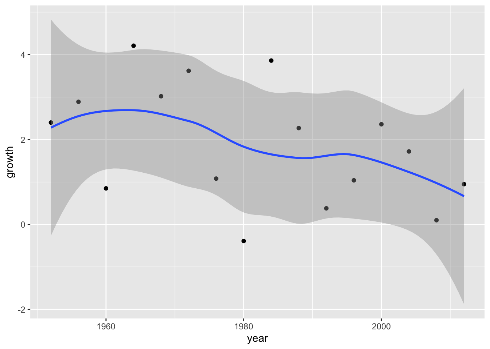
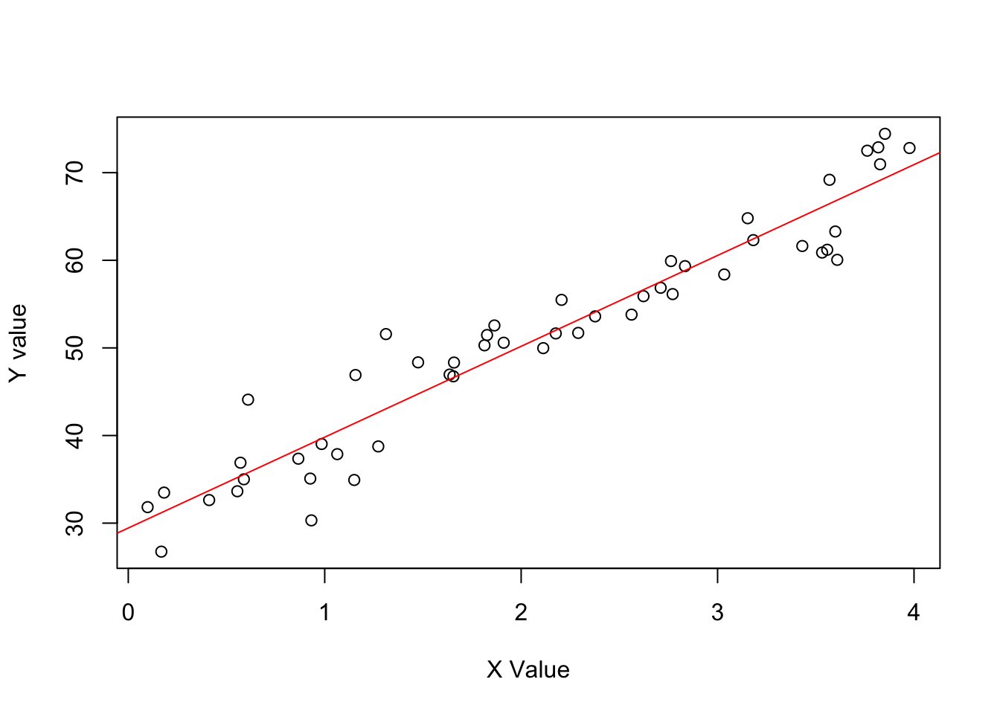

library(rosdata) # for the ROSdata
library(dplyr)
library(readr)
library(ggplot2)
library(rstanarm) # for the stan_glm function
library(brms) # for the brm function1 Overview
1.1 Summary
This first chapter lays out the key challenges of statistical inference in general and regression modeling in particular.
Inference defined as using mathematical models to make general claims from particular data
There are three challenges to statistics, which all can be framed as problems of prediction:
- Generalizing from sample to population;
- Generalizing from treatment to control group;
- Generalizing from observed measurements to the underlying construct of interest.
The key skills you learn in this book are:
- Understanding regression models;
- Constructing regression models;
- Fitting regression models to data;
- Displaying and interpreting the results of regression models;
Regression is a method that allows researchers to summarize how predictions or average values of an outcome vary across individuals defined by a set of predictors. It is used for example to predict, to explore associations, to extrapolate and for causal inference. Exmaples are given.
There are four steps in statistical analysis:
- Model building (starting);
- Model fitting;
- Understanding model fits;
- Criticism.
Fitting models and making predictions can be down different frameworks. Three concerns are important everytime: - Information used;
- Assumptions used;
- Estimating and interpreting (classical or Bayesian framework).
Gelman et all. recommend to use the Bayesian framework. If information available you can use it, if not you can use weakly informative default priors. On this way you stable estimates and with the simulations you can express uncertainty.
The overall Bayesian regression in R is:
Bayes can take longer time. Here you can use
fit<-stan_glm(y~x,data=mydata,algorithm="optimizing")fit<-stan_glm(y~x,data=mydata)fit<-brm(y~x,data=mydata)Where y is the outcome, x is the predictor and mydata is the data frame. But you can do it also in classical framework:
fit<-lm(y~x,data=mydata)Using Bayesian and simulation approaches can be more important when fitting multilevel or regularized regression models. This will be handled in their next book.
1.2 Presentation
First some libraries are loaded.
1.3 Presentation
On 14-11-2023 Alex Trinidad (University of Cologne and Netherlands Institute for the Study of Crime and Law Enforcement) presented the first chapter of the book Regression and Other Stories by Andrew Gelman, Jennifer Hill, and Aki Vehtari: Overview. The session was held online via Zoom. Here you can find Alex’ script Trinidad.
First he loaded this package.
library(tidyverse)- Regression to predict
How can we predict presidential vote share using economy growth? For this he loaded the ROS-data.
elections_data <- read.csv(url("https://raw.githubusercontent.com/avehtari/ROS-Examples/master/ElectionsEconomy/data/hibbs.dat"), sep = "")This another way to load these data.
remotes::install_github("avehtari/ROS-Examples", subdir = "rpackage")Skipping install of 'rosdata' from a github remote, the SHA1 (a049a104) has not changed since last install.
Use `force = TRUE` to force installationelections_data <- rosdata::hibbsLet us first explore economy growth.
glimpse(elections_data)Rows: 16
Columns: 5
$ year <int> 1952, 1956, 1960, 1964, 1968, 1972, 1976, 1980, 19…
$ growth <dbl> 2.40, 2.89, 0.85, 4.21, 3.02, 3.62, 1.08, -0.39, 3…
$ vote <dbl> 44.60, 57.76, 49.91, 61.34, 49.60, 61.79, 48.95, 4…
$ inc_party_candidate <chr> "Stevenson", "Eisenhower", "Nixon", "Johnson", "Hu…
$ other_candidate <chr> "Eisenhower", "Stevenson", "Kennedy", "Goldwater",…Try the view-function yourself.
# View(elections_data)Use visualization to understand the data.
ggplot(data = elections_data) +
geom_point(aes(x = year, y = growth))Add a line to the plot.
ggplot(data = elections_data) +
geom_point(aes(x = year, y = growth)) +
geom_smooth(aes(x = year, y = growth), se = FALSE)Add the CI around the line.
ggplot(data = elections_data) +
geom_point(aes(x = year, y = growth)) +
geom_smooth(aes(x = year, y = growth), se = TRUE)
Fit ols-regression to obtain the predicted values.
mod1 <- lm(vote ~ growth, data = elections_data)Summarize the regression results.
summary(mod1)
Call:
lm(formula = vote ~ growth, data = elections_data)
Residuals:
Min 1Q Median 3Q Max
-8.9929 -0.6674 0.2556 2.3225 5.3094
Coefficients:
Estimate Std. Error t value Pr(>|t|)
(Intercept) 46.2476 1.6219 28.514 8.41e-14 ***
growth 3.0605 0.6963 4.396 0.00061 ***
---
Signif. codes: 0 '***' 0.001 '**' 0.01 '*' 0.05 '.' 0.1 ' ' 1
Residual standard error: 3.763 on 14 degrees of freedom
Multiple R-squared: 0.5798, Adjusted R-squared: 0.5498
F-statistic: 19.32 on 1 and 14 DF, p-value: 0.00061Plot the predicted values.
plot(elections_data$growth, elections_data$vote, xlab = "Economic Growth", ylab = "Vote Share")
abline(coef(mod1), col = "red")Predicted values with ggplot.
ggplot(data = elections_data) +
geom_point(aes(x = growth, y = vote)) +
geom_abline(intercept = mod1[[1]][[1]], slope = mod1[[1]][[2]], color = "red", size = 1) +
scale_x_continuous(labels = scales::label_percent(accuracy = 1, scale = 1)) +
scale_y_continuous(labels = scales::label_percent(accuracy = 1, scale = 1)) +
geom_hline(yintercept = 50) +
labs(title = "Data and linear fit",
x = "Average recent growth in personal income",
y = "Incumbent party's vote share")Warning: Using `size` aesthetic for lines was deprecated in ggplot2 3.4.0.
ℹ Please use `linewidth` instead.Predicted values with ggplot and geom_smooth.
ggplot(data = elections_data) +
geom_point(aes(x = growth, y = vote)) +
geom_smooth(method = "lm", aes(x = growth, y = vote), color = "blue", size = 1) +
scale_x_continuous(labels = scales::label_percent(accuracy = 1, scale = 1)) +
scale_y_continuous(labels = scales::label_percent(accuracy = 1, scale = 1)) +
geom_hline(yintercept = 50) +
labs(title = "Data and linear fit",
x = "Average recent growth in personal income",
y = "Incumbent party's vote share")- Sketching regression
Original \(y = 46.3 + 3.0 x\). Explore the descriptive stats to get some parameters based on the observed data.
elections_data |>
summarise(min_growth = min(growth),
max_growth = max(growth),
mean_growth = mean(growth),
sd_growth = sd(growth),
min_vote = min(vote),
max_vote = max(vote),
mean_vote = mean(vote),
sd_vote = sd(vote)) min_growth max_growth mean_growth sd_growth min_vote max_vote mean_vote
1 -0.39 4.21 1.8975 1.395538 44.6 61.79 52.055
sd_vote
1 5.608951Simulating the data (technique often used in this book).
set.seed(123)
N <- 16
simu_growth <- runif(N, -0.39, 4)
simu_vote <- rnorm(N, 46.2476 + 3.0605*simu_growth, 3.763)
simu_elections <- data.frame(N,simu_growth, simu_vote)Model the simulated data.
simu_mod <- lm(simu_vote ~ simu_growth, data = simu_elections)Summarize the model.
summary(simu_mod)
Call:
lm(formula = simu_vote ~ simu_growth, data = simu_elections)
Residuals:
Min 1Q Median 3Q Max
-6.355 -1.513 -0.488 1.839 5.962
Coefficients:
Estimate Std. Error t value Pr(>|t|)
(Intercept) 43.6769 1.7558 24.876 5.49e-13 ***
simu_growth 4.0052 0.6948 5.765 4.90e-05 ***
---
Signif. codes: 0 '***' 0.001 '**' 0.01 '*' 0.05 '.' 0.1 ' ' 1
Residual standard error: 3.448 on 14 degrees of freedom
Multiple R-squared: 0.7036, Adjusted R-squared: 0.6824
F-statistic: 33.23 on 1 and 14 DF, p-value: 4.896e-05Plot the simulated data using base graphics.
# Base graphic
plot(simu_elections$simu_growth, simu_elections$simu_vote, xlab = "Simulated Economic Growth", ylab = "Simulated Vote Share")
abline(coef(simu_mod), col = "blue")
Plot the samen using ggplot version.
ggplot(data = simu_elections) +
geom_point(aes(x = simu_growth, y = simu_vote)) +
geom_smooth(method = "lm", aes(x = simu_growth, y = simu_vote), color = "blue", size = 1) +
scale_x_continuous(labels = scales::label_percent(accuracy = 1, scale = 1)) +
scale_y_continuous(labels = scales::label_percent(accuracy = 1, scale = 1)) +
geom_hline(yintercept = 50) +
labs(title = "Simulated Data and linear fit",
x = "Simulated Average recent growth in personal income",
y = "Simulated Incumbent party's vote share")Exercise 1.2(a) from ROS for sketching a regression model and data.
- \(y = 30 + 10x\) (residual \(sd 3.9\)) & values of X ranging from \(0-4\)
Define the data.
set.seed(123)
N <- 50
x <- runif(N, 0, 4)
y <- rnorm(N, 30 + 10*x, 3.9)
data <- data.frame(N, x, y)Model the data.
lm_a <- lm(y ~ x, data)Plot the data.
plot(data$x, data$y, xlab = "X Value", ylab = "Y value")
abline(coef(lm_a), col = "red", size = 1)Warning in int_abline(a = a, b = b, h = h, v = v, untf = untf, ...): "size" is
not a graphical parameter
- \(y = 30 + 10x\) (residual \(sd 10\)) & values of X ranging from \(0-4\).
Define the data.
set.seed(123)
N <- 50
x <- runif(N, 0, 4)
y <- rnorm(N, 30 + 10*x, 10)
data <- data.frame(N, x, y)Model it.
lm_b <- lm(y ~ x, data)Plot it.
plot(data$x, data$y, xlab = "X Value", ylab = "Y value")
abline(coef(lm_b), col = "blue")Now simulate a binary predictor example from the Aki Vehtari GH
See Figure 1.5 (page 10).
set.seed(1411)
N <- 50
x <- runif(N, 0, 4)
y <- rnorm(N, 30 + 10*x, 10)
x_binary <- ifelse(x < 3, 0, 1)
data_simu <- data.frame(N, x, y, x_binary)Model it.
lm_binary <- lm(y ~ x_binary, data = data_simu)Summarize the model.
summary(lm_binary)
Call:
lm(formula = y ~ x_binary, data = data_simu)
Residuals:
Min 1Q Median 3Q Max
-27.2063 -8.5257 0.5297 9.3644 27.8011
Coefficients:
Estimate Std. Error t value Pr(>|t|)
(Intercept) 45.812 2.296 19.953 < 2e-16 ***
x_binary 19.033 3.827 4.974 8.81e-06 ***
---
Signif. codes: 0 '***' 0.001 '**' 0.01 '*' 0.05 '.' 0.1 ' ' 1
Residual standard error: 12.99 on 48 degrees of freedom
Multiple R-squared: 0.3401, Adjusted R-squared: 0.3264
F-statistic: 24.74 on 1 and 48 DF, p-value: 8.813e-06Plot the relationship.
ggplot(data = data_simu) +
geom_point(aes(x = x_binary, y = y)) +
geom_abline(intercept = lm_binary[[1]][[1]], slope = lm_binary[[1]][[2]],
color = "blue", size = 1) +
labs(y = "Crime reduction",
x = NULL) +
scale_x_continuous(breaks = c(0,1),
labels = c("Control", "Treatment")) +
annotate(geom = "text", x = 0.50, y = 40,
label = paste("Estimated treatment effect is\nslope of fitted line: ",
round(lm_binary[[1]][[2]], digits = 2)))
Non-linear relationship
set.seed(1411)
x <- runif(N, 1, 7)
y <- rnorm(N, 7 + 30*exp(-x), 2)
data_simu$y <- yFit the model.
lm_nonlinear <- lm(y ~ x, data = data_simu)Summarize the model.
summary(lm_nonlinear)
Call:
lm(formula = y ~ x, data = data_simu)
Residuals:
Min 1Q Median 3Q Max
-6.0484 -1.4874 -0.0243 1.7868 4.4113
Coefficients:
Estimate Std. Error t value Pr(>|t|)
(Intercept) 13.1516 0.6188 21.253 < 2e-16 ***
x -1.8761 0.2476 -7.579 9.6e-10 ***
---
Signif. codes: 0 '***' 0.001 '**' 0.01 '*' 0.05 '.' 0.1 ' ' 1
Residual standard error: 2.21 on 48 degrees of freedom
Multiple R-squared: 0.5447, Adjusted R-squared: 0.5353
F-statistic: 57.43 on 1 and 48 DF, p-value: 9.599e-10Plot the model outcome.
ggplot(data = data_simu) +
geom_point(aes(x = x, y = y)) +
geom_smooth(method = "loess", aes(x = x, y = y), color = "blue", size = 1, se = FALSE) +
labs(y = "Theft counts per hour",
x = "Hours of foot patrol") 1.4 More examples
First look at dataset to predict US-elections (1952-2021) from the economy and explore data.
data("hibbs")
glimpse(hibbs)Rows: 16
Columns: 5
$ year <int> 1952, 1956, 1960, 1964, 1968, 1972, 1976, 1980, 19…
$ growth <dbl> 2.40, 2.89, 0.85, 4.21, 3.02, 3.62, 1.08, -0.39, 3…
$ vote <dbl> 44.60, 57.76, 49.91, 61.34, 49.60, 61.79, 48.95, 4…
$ inc_party_candidate <chr> "Stevenson", "Eisenhower", "Nixon", "Johnson", "Hu…
$ other_candidate <chr> "Eisenhower", "Stevenson", "Kennedy", "Goldwater",…Replicate the plot of Figure 1.1.
ggplot(data = hibbs,
mapping = aes(x = growth, y = vote)) +
# geom_label(mapping = aes(label = year), nudge_x = 0.3, fill = NA, size = 3) +
geom_point() Now run the first regression model using stanarm or brms. This simulation works with four chains and 2000 iterations per chain.
M1 <- stan_glm(vote ~ growth, data=hibbs)
SAMPLING FOR MODEL 'continuous' NOW (CHAIN 1).
Chain 1:
Chain 1: Gradient evaluation took 8.2e-05 seconds
Chain 1: 1000 transitions using 10 leapfrog steps per transition would take 0.82 seconds.
Chain 1: Adjust your expectations accordingly!
Chain 1:
Chain 1:
Chain 1: Iteration: 1 / 2000 [ 0%] (Warmup)
Chain 1: Iteration: 200 / 2000 [ 10%] (Warmup)
Chain 1: Iteration: 400 / 2000 [ 20%] (Warmup)
Chain 1: Iteration: 600 / 2000 [ 30%] (Warmup)
Chain 1: Iteration: 800 / 2000 [ 40%] (Warmup)
Chain 1: Iteration: 1000 / 2000 [ 50%] (Warmup)
Chain 1: Iteration: 1001 / 2000 [ 50%] (Sampling)
Chain 1: Iteration: 1200 / 2000 [ 60%] (Sampling)
Chain 1: Iteration: 1400 / 2000 [ 70%] (Sampling)
Chain 1: Iteration: 1600 / 2000 [ 80%] (Sampling)
Chain 1: Iteration: 1800 / 2000 [ 90%] (Sampling)
Chain 1: Iteration: 2000 / 2000 [100%] (Sampling)
Chain 1:
Chain 1: Elapsed Time: 0.097 seconds (Warm-up)
Chain 1: 0.057 seconds (Sampling)
Chain 1: 0.154 seconds (Total)
Chain 1:
SAMPLING FOR MODEL 'continuous' NOW (CHAIN 2).
Chain 2:
Chain 2: Gradient evaluation took 1.5e-05 seconds
Chain 2: 1000 transitions using 10 leapfrog steps per transition would take 0.15 seconds.
Chain 2: Adjust your expectations accordingly!
Chain 2:
Chain 2:
Chain 2: Iteration: 1 / 2000 [ 0%] (Warmup)
Chain 2: Iteration: 200 / 2000 [ 10%] (Warmup)
Chain 2: Iteration: 400 / 2000 [ 20%] (Warmup)
Chain 2: Iteration: 600 / 2000 [ 30%] (Warmup)
Chain 2: Iteration: 800 / 2000 [ 40%] (Warmup)
Chain 2: Iteration: 1000 / 2000 [ 50%] (Warmup)
Chain 2: Iteration: 1001 / 2000 [ 50%] (Sampling)
Chain 2: Iteration: 1200 / 2000 [ 60%] (Sampling)
Chain 2: Iteration: 1400 / 2000 [ 70%] (Sampling)
Chain 2: Iteration: 1600 / 2000 [ 80%] (Sampling)
Chain 2: Iteration: 1800 / 2000 [ 90%] (Sampling)
Chain 2: Iteration: 2000 / 2000 [100%] (Sampling)
Chain 2:
Chain 2: Elapsed Time: 0.057 seconds (Warm-up)
Chain 2: 0.046 seconds (Sampling)
Chain 2: 0.103 seconds (Total)
Chain 2:
SAMPLING FOR MODEL 'continuous' NOW (CHAIN 3).
Chain 3:
Chain 3: Gradient evaluation took 1.5e-05 seconds
Chain 3: 1000 transitions using 10 leapfrog steps per transition would take 0.15 seconds.
Chain 3: Adjust your expectations accordingly!
Chain 3:
Chain 3:
Chain 3: Iteration: 1 / 2000 [ 0%] (Warmup)
Chain 3: Iteration: 200 / 2000 [ 10%] (Warmup)
Chain 3: Iteration: 400 / 2000 [ 20%] (Warmup)
Chain 3: Iteration: 600 / 2000 [ 30%] (Warmup)
Chain 3: Iteration: 800 / 2000 [ 40%] (Warmup)
Chain 3: Iteration: 1000 / 2000 [ 50%] (Warmup)
Chain 3: Iteration: 1001 / 2000 [ 50%] (Sampling)
Chain 3: Iteration: 1200 / 2000 [ 60%] (Sampling)
Chain 3: Iteration: 1400 / 2000 [ 70%] (Sampling)
Chain 3: Iteration: 1600 / 2000 [ 80%] (Sampling)
Chain 3: Iteration: 1800 / 2000 [ 90%] (Sampling)
Chain 3: Iteration: 2000 / 2000 [100%] (Sampling)
Chain 3:
Chain 3: Elapsed Time: 0.051 seconds (Warm-up)
Chain 3: 0.048 seconds (Sampling)
Chain 3: 0.099 seconds (Total)
Chain 3:
SAMPLING FOR MODEL 'continuous' NOW (CHAIN 4).
Chain 4:
Chain 4: Gradient evaluation took 1.6e-05 seconds
Chain 4: 1000 transitions using 10 leapfrog steps per transition would take 0.16 seconds.
Chain 4: Adjust your expectations accordingly!
Chain 4:
Chain 4:
Chain 4: Iteration: 1 / 2000 [ 0%] (Warmup)
Chain 4: Iteration: 200 / 2000 [ 10%] (Warmup)
Chain 4: Iteration: 400 / 2000 [ 20%] (Warmup)
Chain 4: Iteration: 600 / 2000 [ 30%] (Warmup)
Chain 4: Iteration: 800 / 2000 [ 40%] (Warmup)
Chain 4: Iteration: 1000 / 2000 [ 50%] (Warmup)
Chain 4: Iteration: 1001 / 2000 [ 50%] (Sampling)
Chain 4: Iteration: 1200 / 2000 [ 60%] (Sampling)
Chain 4: Iteration: 1400 / 2000 [ 70%] (Sampling)
Chain 4: Iteration: 1600 / 2000 [ 80%] (Sampling)
Chain 4: Iteration: 1800 / 2000 [ 90%] (Sampling)
Chain 4: Iteration: 2000 / 2000 [100%] (Sampling)
Chain 4:
Chain 4: Elapsed Time: 0.075 seconds (Warm-up)
Chain 4: 0.053 seconds (Sampling)
Chain 4: 0.128 seconds (Total)
Chain 4: M1 is set on your computer and you can give a summary of this regression model.
M1stan_glm
family: gaussian [identity]
formula: vote ~ growth
observations: 16
predictors: 2
------
Median MAD_SD
(Intercept) 46.3 1.6
growth 3.0 0.7
Auxiliary parameter(s):
Median MAD_SD
sigma 3.9 0.7
------
* For help interpreting the printed output see ?print.stanreg
* For info on the priors used see ?prior_summary.stanregOr print the intercept (46.26) and the slope (3.05) of this model.
coef(M1)(Intercept) growth
46.300290 3.037234 M2 <- brm(vote ~ growth, data=hibbs)Compiling Stan program...Start sampling
SAMPLING FOR MODEL 'anon_model' NOW (CHAIN 1).
Chain 1:
Chain 1: Gradient evaluation took 2.1e-05 seconds
Chain 1: 1000 transitions using 10 leapfrog steps per transition would take 0.21 seconds.
Chain 1: Adjust your expectations accordingly!
Chain 1:
Chain 1:
Chain 1: Iteration: 1 / 2000 [ 0%] (Warmup)
Chain 1: Iteration: 200 / 2000 [ 10%] (Warmup)
Chain 1: Iteration: 400 / 2000 [ 20%] (Warmup)
Chain 1: Iteration: 600 / 2000 [ 30%] (Warmup)
Chain 1: Iteration: 800 / 2000 [ 40%] (Warmup)
Chain 1: Iteration: 1000 / 2000 [ 50%] (Warmup)
Chain 1: Iteration: 1001 / 2000 [ 50%] (Sampling)
Chain 1: Iteration: 1200 / 2000 [ 60%] (Sampling)
Chain 1: Iteration: 1400 / 2000 [ 70%] (Sampling)
Chain 1: Iteration: 1600 / 2000 [ 80%] (Sampling)
Chain 1: Iteration: 1800 / 2000 [ 90%] (Sampling)
Chain 1: Iteration: 2000 / 2000 [100%] (Sampling)
Chain 1:
Chain 1: Elapsed Time: 0.026 seconds (Warm-up)
Chain 1: 0.022 seconds (Sampling)
Chain 1: 0.048 seconds (Total)
Chain 1:
SAMPLING FOR MODEL 'anon_model' NOW (CHAIN 2).
Chain 2:
Chain 2: Gradient evaluation took 8e-06 seconds
Chain 2: 1000 transitions using 10 leapfrog steps per transition would take 0.08 seconds.
Chain 2: Adjust your expectations accordingly!
Chain 2:
Chain 2:
Chain 2: Iteration: 1 / 2000 [ 0%] (Warmup)
Chain 2: Iteration: 200 / 2000 [ 10%] (Warmup)
Chain 2: Iteration: 400 / 2000 [ 20%] (Warmup)
Chain 2: Iteration: 600 / 2000 [ 30%] (Warmup)
Chain 2: Iteration: 800 / 2000 [ 40%] (Warmup)
Chain 2: Iteration: 1000 / 2000 [ 50%] (Warmup)
Chain 2: Iteration: 1001 / 2000 [ 50%] (Sampling)
Chain 2: Iteration: 1200 / 2000 [ 60%] (Sampling)
Chain 2: Iteration: 1400 / 2000 [ 70%] (Sampling)
Chain 2: Iteration: 1600 / 2000 [ 80%] (Sampling)
Chain 2: Iteration: 1800 / 2000 [ 90%] (Sampling)
Chain 2: Iteration: 2000 / 2000 [100%] (Sampling)
Chain 2:
Chain 2: Elapsed Time: 0.03 seconds (Warm-up)
Chain 2: 0.021 seconds (Sampling)
Chain 2: 0.051 seconds (Total)
Chain 2:
SAMPLING FOR MODEL 'anon_model' NOW (CHAIN 3).
Chain 3:
Chain 3: Gradient evaluation took 6e-06 seconds
Chain 3: 1000 transitions using 10 leapfrog steps per transition would take 0.06 seconds.
Chain 3: Adjust your expectations accordingly!
Chain 3:
Chain 3:
Chain 3: Iteration: 1 / 2000 [ 0%] (Warmup)
Chain 3: Iteration: 200 / 2000 [ 10%] (Warmup)
Chain 3: Iteration: 400 / 2000 [ 20%] (Warmup)
Chain 3: Iteration: 600 / 2000 [ 30%] (Warmup)
Chain 3: Iteration: 800 / 2000 [ 40%] (Warmup)
Chain 3: Iteration: 1000 / 2000 [ 50%] (Warmup)
Chain 3: Iteration: 1001 / 2000 [ 50%] (Sampling)
Chain 3: Iteration: 1200 / 2000 [ 60%] (Sampling)
Chain 3: Iteration: 1400 / 2000 [ 70%] (Sampling)
Chain 3: Iteration: 1600 / 2000 [ 80%] (Sampling)
Chain 3: Iteration: 1800 / 2000 [ 90%] (Sampling)
Chain 3: Iteration: 2000 / 2000 [100%] (Sampling)
Chain 3:
Chain 3: Elapsed Time: 0.028 seconds (Warm-up)
Chain 3: 0.023 seconds (Sampling)
Chain 3: 0.051 seconds (Total)
Chain 3:
SAMPLING FOR MODEL 'anon_model' NOW (CHAIN 4).
Chain 4:
Chain 4: Gradient evaluation took 6e-06 seconds
Chain 4: 1000 transitions using 10 leapfrog steps per transition would take 0.06 seconds.
Chain 4: Adjust your expectations accordingly!
Chain 4:
Chain 4:
Chain 4: Iteration: 1 / 2000 [ 0%] (Warmup)
Chain 4: Iteration: 200 / 2000 [ 10%] (Warmup)
Chain 4: Iteration: 400 / 2000 [ 20%] (Warmup)
Chain 4: Iteration: 600 / 2000 [ 30%] (Warmup)
Chain 4: Iteration: 800 / 2000 [ 40%] (Warmup)
Chain 4: Iteration: 1000 / 2000 [ 50%] (Warmup)
Chain 4: Iteration: 1001 / 2000 [ 50%] (Sampling)
Chain 4: Iteration: 1200 / 2000 [ 60%] (Sampling)
Chain 4: Iteration: 1400 / 2000 [ 70%] (Sampling)
Chain 4: Iteration: 1600 / 2000 [ 80%] (Sampling)
Chain 4: Iteration: 1800 / 2000 [ 90%] (Sampling)
Chain 4: Iteration: 2000 / 2000 [100%] (Sampling)
Chain 4:
Chain 4: Elapsed Time: 0.03 seconds (Warm-up)
Chain 4: 0.023 seconds (Sampling)
Chain 4: 0.053 seconds (Total)
Chain 4: M2 is set on your computer and you can give a summary of this regression model.
M2 <-
brm(data = hibbs,
vote ~ growth,
cores = 4, chains = 4, iter = 2000,
seed = 123)Compiling Stan program...Start samplingM2 Family: gaussian
Links: mu = identity; sigma = identity
Formula: vote ~ growth
Data: hibbs (Number of observations: 16)
Draws: 4 chains, each with iter = 2000; warmup = 1000; thin = 1;
total post-warmup draws = 4000
Population-Level Effects:
Estimate Est.Error l-95% CI u-95% CI Rhat Bulk_ESS Tail_ESS
Intercept 46.15 1.85 42.36 49.74 1.00 2993 2088
growth 3.07 0.80 1.49 4.73 1.00 2757 1903
Family Specific Parameters:
Estimate Est.Error l-95% CI u-95% CI Rhat Bulk_ESS Tail_ESS
sigma 4.07 0.83 2.84 6.06 1.00 2683 1955
Draws were sampled using sampling(NUTS). For each parameter, Bulk_ESS
and Tail_ESS are effective sample size measures, and Rhat is the potential
scale reduction factor on split chains (at convergence, Rhat = 1).Now add line to plot.
ggplot(data = hibbs,
mapping = aes(x = growth, y = vote)) +
geom_point() +
geom_abline(slope = coef(M1)[["growth"]],
intercept = coef(M1)[["(Intercept)"]]) We also looked at the peacekeeping data (1.3). First open the data.
peace_df <- read_csv("~/Desktop/WERK/Gelman/ROS-book/ROS-book/ROS-Examples-master/Peacekeeping/data/minidata.csv")Explore this dataset now.
glimpse(peace_df)Rows: 2,031
Columns: 7
$ ...1 <dbl> 1, 2, 3, 4, 5, 6, 7, 8, 9, 10, 11, 12, 13, 14, 15, 16,…
$ cfdate <dbl> 140, 150, 210, 125, 126, 200, 110, 165, 190, 125, 200,…
$ faildate <dbl> 66, 64, 74, 66, 64, 65, 63, 68, 63, 64, 62, 73, 72, 72…
$ `peacekeepers?` <dbl> 1, 0, 0, 1, 1, 1, 1, 1, 1, 1, 1, 0, 0, 0, 0, 0, 1, 0, …
$ badness <chr> "white", "black", "white", "white", "white", "white", …
$ delay <dbl> 1, 1, 3, 5, 1, 1, 6, 1, 1, 4, 2, 1, 1, 1, 2, 1, 4, 4, …
$ `censored?` <dbl> 2, 1, 2, 1, 2, 2, 2, 2, 2, 1, 2, 1, 2, 2, 2, 2, 2, 2, …Create date measure. It’s actually the same as delay.
peace_df <- peace_df |>
mutate(time_diff = (faildate-cfdate)/365)Let us plot it …
# Harrie: not working
# peace_df |>
# ggplot(data = .) +
# geom_histogram(mapping = aes(x = delay), bins = 10) +
# facet_wrap(~`peacekeepers?`) … or put it in a scatterplot.
ggplot(data = peace_df) +
geom_point(mapping = aes(y = delay,
colour = as.factor(`censored?`),
x = badness,
)) +
facet_wrap(~`peacekeepers?`) Means.
peace_df |>
group_by(`peacekeepers?`, `censored?`) |>
summarise(mean_badness = mean(badness, na.rm = TRUE))# A tibble: 5 × 3
# Groups: peacekeepers? [2]
`peacekeepers?` `censored?` mean_badness
<dbl> <dbl> <dbl>
1 0 1 NA
2 0 2 NA
3 1 1 NA
4 1 2 NA
5 1 NA NASimple causal graph for reproducibility of simulated data.
SEED <- 1151
set.seed(SEED)
N <- 50
x <- runif(N, 1, 5)
y <- rnorm(N, 10 + 3*x, 3)
x_binary <- ifelse(x<3, 0, 1)
causal_df <- data.frame(N, x, y, x_binary)Plot this.
ggplot(data = causal_df) +
geom_point(mapping = aes(y = y, x = x))